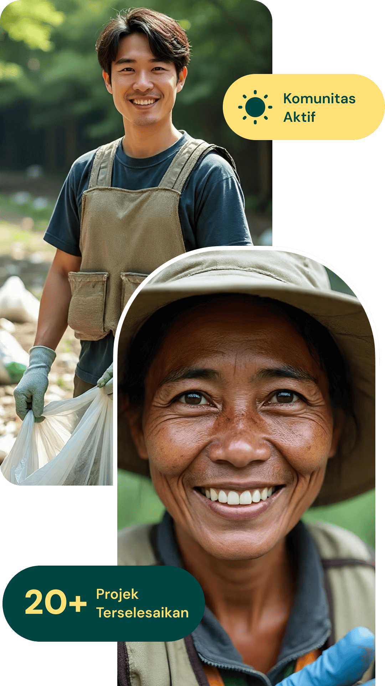
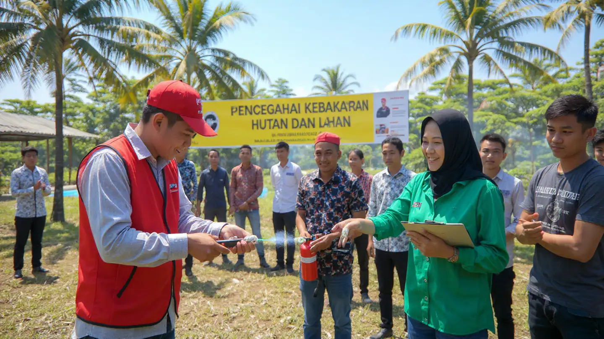
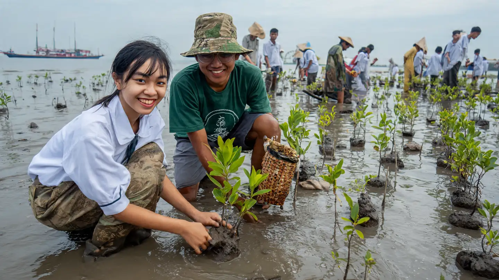
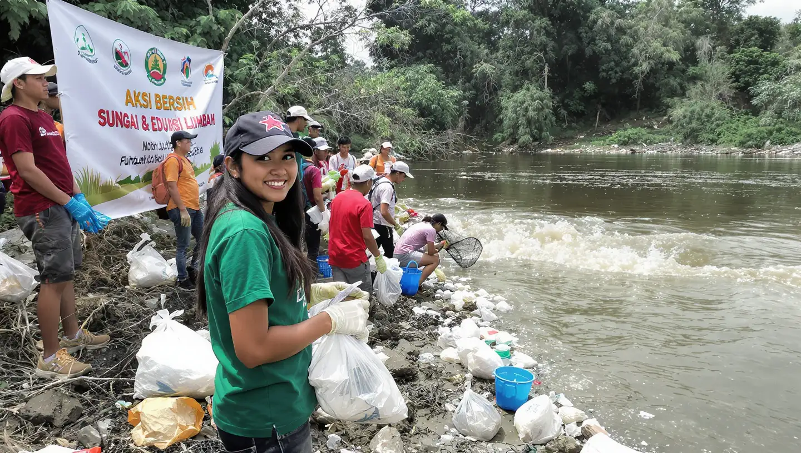

Natura didirikan tahun 2026, lahir dari kepedulian warga terhadap persoalan sampah di lingkungan sekitar. Bermula dari gerakan sederhana memungut plastik di sekitar rumah, inisiatif ini berkembang menjadi sebuah platform digital. Kini Natura menjembatani masyarakat dengan mitra pengolah daur ulang serta marketplace ramah lingkungan. Di samping itu, Natura rutin menggelar berbagai aktivitas lingkungan mulai dari aksi bersih-bersih, pelatihan daur ulang, hingga kampanye edukasi bersama komunitas. Perjalanan ini membuktikan bahwa aksi kecil mampu tumbuh menjadi gerakan yang menghadirkan perubahan besar dan nyata.
Menjadi platform lingkungan nomor satu di Indonesia yang merevolusi persepsi masyarakat tentang sampah. Bagi Natura, sampah bukanlah masalah, melainkan potensi berharga yang bisa diolah, dimanfaatkan, dan diubah menjadi kebaikan untuk banyak orang.
Natura muncul dari tekad anak muda yang ingin menemukan jawaban konkret untuk persoalan sampah. Di sini, siapa saja bisa turut andil dengan langkah sederhana namun penuh makna. Kami membantu Anda mengelola sampah sekaligus meraih penghasilan, berbelanja produk ramah lingkungan di marketplace hijau, bergabung dalam kegiatan komunitas, hingga menambah wawasan lewat konten edukasi. Natura yakin bahwa hidup bertanggung jawab terhadap alam bisa dijalani setiap hari dengan cara yang praktis, menyenangkan, dan bermanfaat bagi semua orang.
Tiga langkah simpel untuk turut andil mengurangi sampah plastik sekaligus meraih penghasilan
Buat akun Natura secara gratis dan lengkapi verifikasi identitas. Nikmati akses penuh ke seluruh fitur dan layanan kami.
Kumpulkan sampah plastik Anda dan tentukan jadwal penjemputan sesuai waktu yang paling nyaman bagi Anda.
Terima uang langsung dari setiap setoran sampah Anda. Cairkan ke rekening bank atau e-wallet kapan pun Anda mau.
Saksikan aktivitas komunitas dan momen restorasi yang menggerakkan aksi kecil berdampak besar.





Kampanye Bersih Pantai dan Kesadaran Lingkungan 2026 adalah gerakan kolaboratif yang mengajak masyarakat, komunitas lokal, pelajar, hingga wisatawan untuk bersama-sama menjaga keindahan Pantai Kuta, Bali. Melalui aksi nyata membersihkan sampah plastik, edukasi pengelolaan limbah, serta diskusi interaktif tentang dampak polusi laut, kegiatan ini bertujuan menumbuhkan rasa cinta dan tanggung jawab terhadap bumi.
Ahmad Fauzi
Bersama komunitas lokal, kegiatan ini berfokus pada penanaman bibit karang dan edukasi tentang pentingnya menjaga ekosistem laut. Terumbu karang adalah rumah bagi ribuan spesies laut yang kini terancam oleh polusi dan perubahan iklim.
 Maria Yohana
Maria Yohana
Melalui workshop kreatif, peserta diajak mengolah sampah plastik menjadi produk baru sekaligus memahami dampak plastik sekali pakai terhadap lingkungan perkotaan.
 Siti Rahmawati
Siti Rahmawati
Berikut sejumlah pertanyaan yang kerap ditanyakan seputar cara kerja Natura.
Tim inti Natura yang berkomitmen membangun masa depan yang lebih hijau dan lestari
Team Natura
Team Natura
Team Natura
Team Natura
Kami siap mendampingi Anda dalam upaya mewujudkan lingkungan yang lebih bersih dan lestari. Jangan segan untuk menghubungi kami!
info@natura.org
Telepon
+62-361-123-4567
Alamat
Jl. Raya Ubud No. 88, Bali
Jam Operasional
Senin - Jumat, 08:00 - 17:00
Ikuti kami di media sosial untuk mendapatkan kabar terbaru seputar program dan kegiatan kami!
Lengkapi formulir berikut dan kami akan segera merespons pesan Anda.